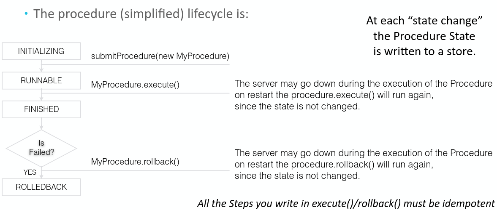
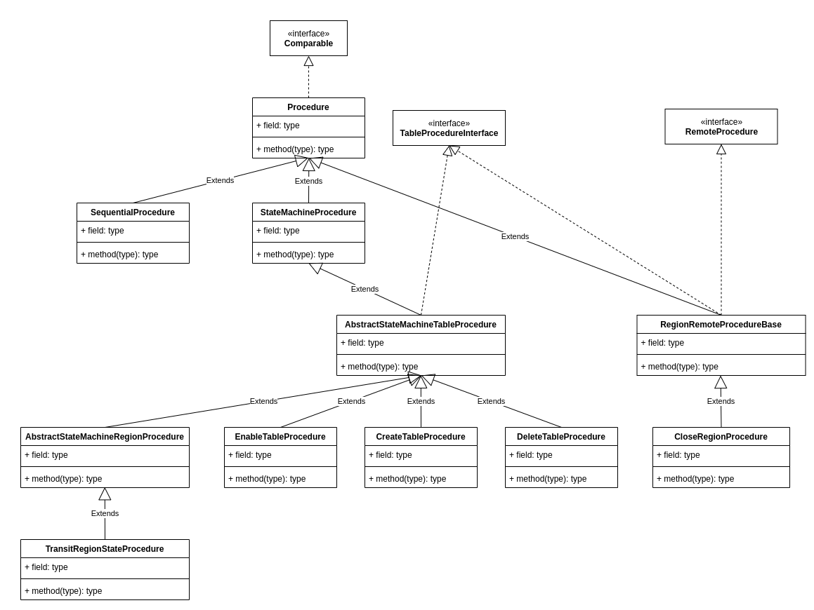
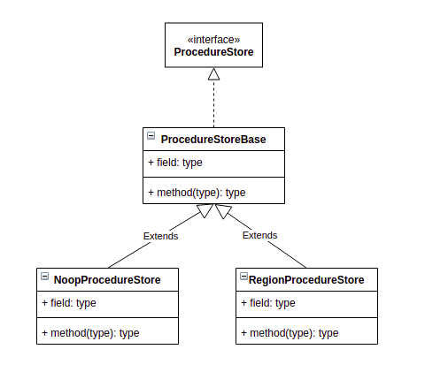
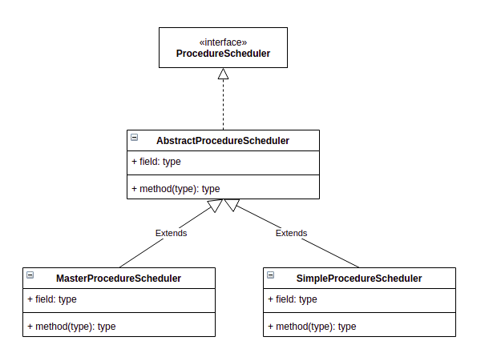
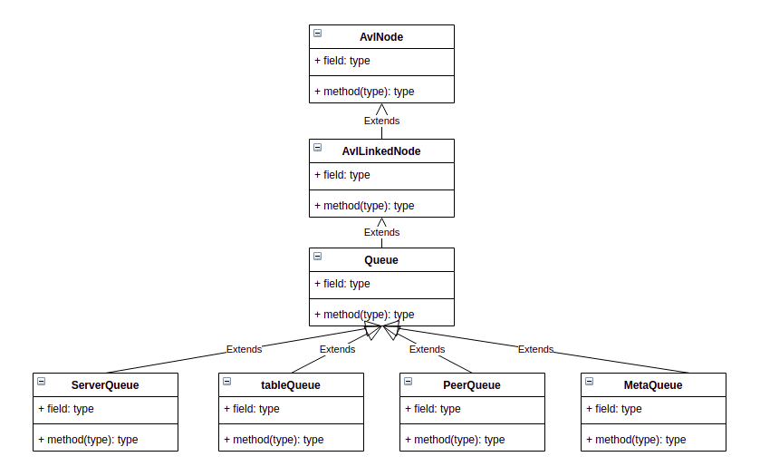
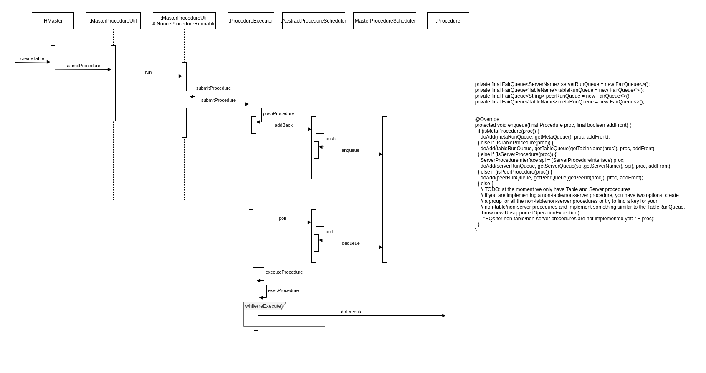

Ch10-HBase 之 Procedure v2
March 17, 2021
HBase Procedure V2
1. HBase Procedure v2 之 Procedure #
1.2 Procedure 类型 #
| 名称 | 说明 |
|---|---|
| Meta Procedure | execute(), rollback() |
| Server Procedure | 唯一的一种类型为 ServerCrashProcedure，用来负责 RegionServer 进程故障后的处理 |
| Peer Procedure | 与 Replication 相关，如 AddPeerProcedure, RemovePeerProcedure 等等 |
| Table Procedure | 类型最为丰富，如 CreateTableProcedure, DisableTableProcedure, EnableTableProcedure, AssignProcedure, SplitTableRegionProcedure, …涵盖表级别、Region 级别的各类操作。 |
在 ProcedureScheduler 中，需要同时调度这几种类型的 Procedure，调度的优先级顺序 (由高到低) 为：
Meta -> Server -> Peer -> Table。
1.3 Procedure 状态 #
| 名称 | 说明 |
|---|---|
| INITIALIZING | Procedure in construction, not yet added to the executor |
| RUNNABLE | Procedure added to the executor, and ready to be executed |
| WAITING | The procedure is waiting on children to be completed |
| WAITING_TIMEOUT | The procedure is waiting a timout or an external event |
| ROLLEDBACK | The procedure failed and was rolledback |
| SUCCESS | The procedure execution is completed successfully. |
| FAILED | The procedure execution is failed, may need to rollback |
根据 Procedure 的生命周期，整个状态切换大概如下图所示。

1.4 Procedure 的实现 #
1.4.1 Procedure 的实现体系 #
Procedure 的实现非常丰富，这里仅仅举出几个常见的 Procedure 的继承关系。

其中最常见的就是 StateMachineProcedure，对于所有执行存在先后顺序，且存在状态切换的 Procedure 实现都会继承此类，同时这些 Procedure 也会定义一些自己的状态，比如 MasterProcedure.proto 中定义了 CreateTableState，CreateTableState 又进一步定义了该 Procedure 在调度中会存在下述定义的状态。
enum CreateTableState
{
CREATE_TABLE_PRE_OPERATION = 1;
CREATE_TABLE_WRITE_FS_LAYOUT = 2;
CREATE_TABLE_ADD_TO_META = 3;
CREATE_TABLE_ASSIGN_REGIONS = 4;
CREATE_TABLE_UPDATE_DESC_CACHE = 5;
CREATE_TABLE_POST_OPERATION = 6;
}
StateMachineProcedure 使用 int[] states 数组来存储本次Procedure中所涉及到的 Procedure 状态的编号（即上面的1,2…等数字），stateCount 用来存储 states 的下标。这里有个细节提下，即便是多个 Procedure 也一定是从前往后执行，所以 states 中的最后一个表示的一定是当前 Procedure 的状态。
1.4.2 Procedure 的主要实现方法 #
最简单的 Procedure 可以采用如下的方式（取自 TestProcedureToString.java）实现。其中 execute() 和 rollback() 分别定义如何执行和回滚该 Procedure 操作。而 serializeStateData() 和 descrializeStateData() 则定义了如何序列化和反序列化该 Procedure。
/**
* A do-nothing basic procedure just for testing toString.
*/
static class BasicProcedure extends Procedure<BasicProcedureEnv> {
@Override
protected Procedure<BasicProcedureEnv>[] execute(BasicProcedureEnv env)
throws ProcedureYieldException, InterruptedException {
return new Procedure [] {this};
}
@Override
protected void rollback(BasicProcedureEnv env) throws IOException, InterruptedException {
}
@Override
protected boolean abort(BasicProcedureEnv env) {
return false;
}
@Override
protected void serializeStateData(ProcedureStateSerializer serializer)
throws IOException {
}
@Override
protected void deserializeStateData(ProcedureStateSerializer serializer)
throws IOException {
}
}
2. HBase Procedure v2 之 ProcedureExecutor #
2.1 ProcedureExecutor 的实现 #
ProcedureExecutor 功能是比较单一的，实现上面也仅仅只有一个 ProcedureExecutor 类而已。ProcedureExecutor 最核心的方法大概有 init()，submitProcedure()，bypassProcedure()。init() 方法主要负责完成 ProcedureExecutor 的初始化，并且接着将 ProcedureExecutor 启动起来；submitProcedure 完成的功能顾名思义是将 Procedure 提交到 ProcedureExecutor，交由其执行。bypassProcedure() 并不是一个非常常规的方法，会绕过 Procedure 的 execute() 和 rollback()，直接持久化 Procedure。
3. HBase Procedure v2 之 ProcedureStore #
3.1 ProcedureStore 的实现 #
3.1.1 ProcedureStore 的实现体系 #
ProcedureStore 的实现就只有如下两种，一种是存储在内存的 NoopProcedureStore，另一种是存储到 HDFS 的 RegionProcedureStore。
注意： NoopProcedureStore 说存储在内存表述也不恰当，因为它没有使用任何数据结构去承载 Procedure。 RegionProcedureStore 则是借用 Master 的自有 Flush 逻辑，将 Procedure 持久化到 HDFS 的 MasterData 目录，有点类似于 Master 特有的 table。

3.1.2 ProcedureStore 的主要实现方法 #
最简单的 Procedure 可以采用如下的方式（取自 NoopProcedureStore.java）实现。其中 start() 和 stop() 定义了如何打开 ProcedureStore，insert(), delete(), update(), load() 则定义了 ProcedureStore 的增删改查。
public class NoopProcedureStore extends ProcedureStoreBase {
private int numThreads;
@Override
public void start(int numThreads) throws IOException {
if (!setRunning(true)) {
return;
}
this.numThreads = numThreads;
}
@Override
public void stop(boolean abort) {
setRunning(false);
}
@Override
public void recoverLease() throws IOException { }
@Override
public int getNumThreads() {
return numThreads;
}
@Override
public int setRunningProcedureCount(final int count) {
return count;
}
@Override
public void load(final ProcedureLoader loader) throws IOException {
loader.setMaxProcId(0);
}
@Override
public void insert(Procedure<?> proc, Procedure<?>[] subprocs) { }
@Override
public void insert(Procedure<?>[] proc) { }
@Override
public void update(Procedure<?> proc) { }
@Override
public void delete(long procId) { }
@Override
public void delete(Procedure<?> proc, long[] subprocs) { }
@Override
public void delete(long[] procIds, int offset, int count) { }
}
4. HBase Procedure v2 之 Scheduler #
4.1 Scheduler 的实现体系 #
Scheduler 的实现总共两种，而 SimpleProcedureScheduler 几乎处于废弃的状态。MasterProcedureScheduler 与其说调度，倒不如说是维护四种与 Procedure 类型对应的的队列入队与出队。 注意，这个队列本质上是个完全平衡二叉树，而不是个普通的链表。而且这些队列自身并没有任何并发访问控制，在入队和出队的时候，需要先获取 schedulerLock（使用 ReentrantLock 实现），然后才能进行操作。

每种 Procedure 被提交时，最终都会存储到对应的 Procedure 的队列中。
private final FairQueue<ServerName> serverRunQueue = new FairQueue<>();
private final FairQueue<TableName> tableRunQueue = new FairQueue<>();
private final FairQueue<String> peerRunQueue = new FairQueue<>();
private final FairQueue<TableName> metaRunQueue = new FairQueue<>();

5. HBase Procedure 的执行流程 #

Procedure 的执行流程还是比较清晰的，以建表为例，当在客户端输入 create 't', 'f1'的时候，接着该请求会被发送到 HMaster，HMaster 接收到请求后，通过该请求参数构造成对应的 Procedure(CreateTableProcedure)，然后借助 MasterProcedureUtil 工具将其提交到 ProcedureExecutor，ProcedureExecutor 接收到该 Procedure 之后，将其提交到 MasterProcedureScheduler，接着由 MasterProcedureScheduler 将其插入 CreateTableProcedure 对应的队列 (tableRunQueue) 中。
因为 ProcedureExecutor 维护了一个 WorkerThread 线程池，该线程池在 HMaster 启动的时候，完成初始化并将其启动，当向由 MasterProcedureScheduler 中的队列插入 Procedure 后，该线程池中的 WorkerThread 发现（while 循环不断尝试发现）队列中插入了 Procedure，会将其取出来（因为获取队列 Procedure 之前，会先尝试获取 chedulerLock，所以完全不用担心多个线程同时获取到同一个 Procedure），根据 Procedure 中定义的 execute() 方法执行具体步骤。